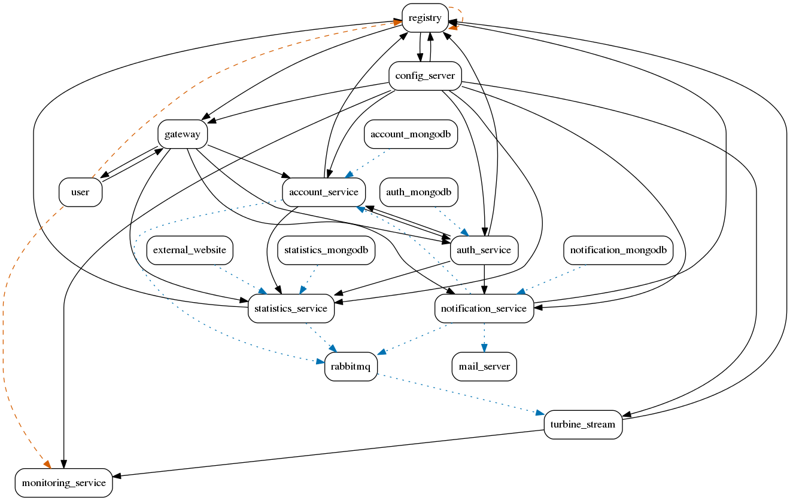

Non-conformance visualization for sqshq_piggymetrics

Overview of interpretations generated for sqshq_piggymetrics
Dynamic non-conformance between notification-mongodb and notification-service:
Click here to view the interpretation for the dynamic non-conformance between notification-mongodb and notification-service
Dynamic non-conformance between statistics-service and rabbitmq:
Click here to view the interpretation for the dynamic non-conformance between statistics-service and rabbitmq
Static non-conformance between user and registry:
Click here to view the interpretation for the static non-conformance between user and registry
Dynamic non-conformance between notification-service and account-service:
Click here to view the interpretation for the dynamic non-conformance between notification-service and account-service
Dynamic non-conformance between notification-service and mail-server:
Click here to view the interpretation for the dynamic non-conformance between notification-service and mail-server
Dynamic non-conformance between notification-service and rabbitmq:
Click here to view the interpretation for the dynamic non-conformance between notification-service and rabbitmq
Dynamic non-conformance between account-service and rabbitmq:
Click here to view the interpretation for the dynamic non-conformance between account-service and rabbitmq
Dynamic non-conformance between rabbitmq and turbine-stream:
Click here to view the interpretation for the dynamic non-conformance between rabbitmq and turbine-stream
Static non-conformance between user and monitoring-service:
Click here to view the interpretation for the static non-conformance between user and monitoring-service
Static non-conformance between registry and registry:
Click here to view the interpretation for the static non-conformance between registry and registry
Dynamic non-conformance between account-mongodb and account-service:
Click here to view the interpretation for the dynamic non-conformance between account-mongodb and account-service
Dynamic non-conformance between external-website and statistics-service:
Click here to view the interpretation for the dynamic non-conformance between external-website and statistics-service
Dynamic non-conformance between statistics-mongodb and statistics-service:
Click here to view the interpretation for the dynamic non-conformance between statistics-mongodb and statistics-service
Dynamic non-conformance between auth-mongodb and auth-service:
Click here to view the interpretation for the dynamic non-conformance between auth-mongodb and auth-service